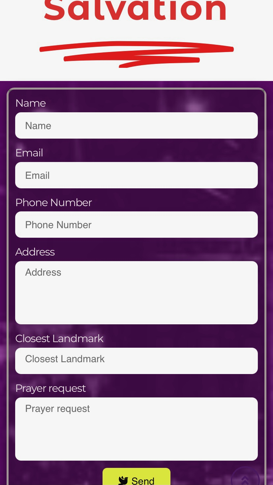
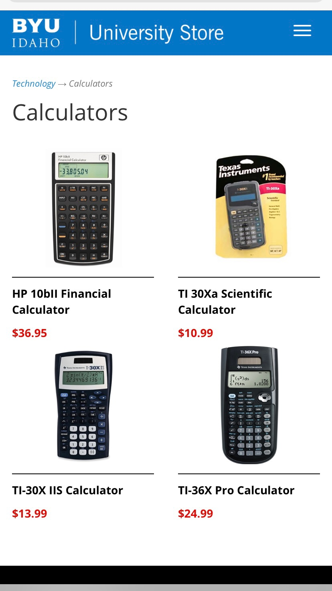
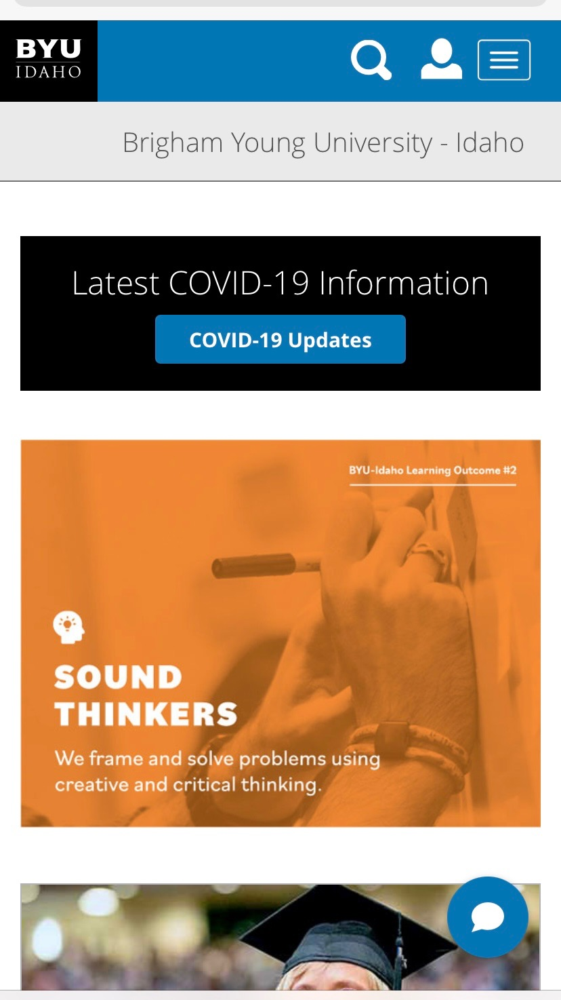

Visual Hierarchy
RCCG
RCCG stands for Redeemed Christian Church of God and this page screenshot above has an example of a good Visual Hierarchy. Certain parts of the website are more important than others and this page shows that with sizes and colors as seen in 'Salvation' and 'Send'.
Alignment
BYUI Store
The 4 different pictures of calculators and their titles are aligned vertically and horizontally. The other elements in the page are aligned horizontally making it easy to read.
Rule of Thirds
Brigham Young University - Idaho
The hand holding a pen and the graduation hat in the following image are positioned following the Rule of Thirds. This makes it easier to focus on other texts and elements in the page. It also makes it look balanced and appealing to the eyes.